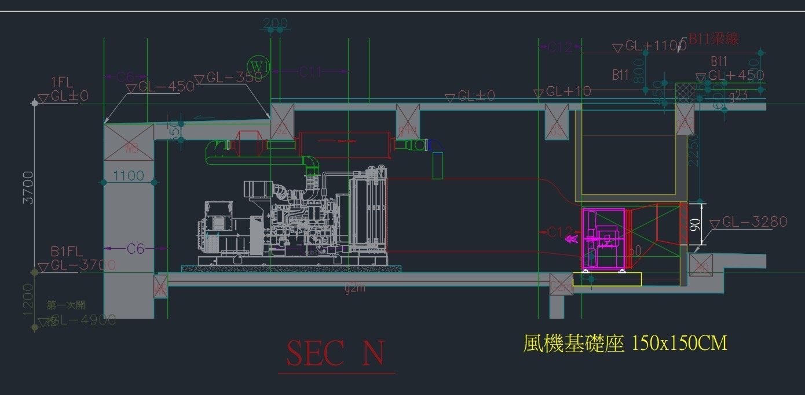
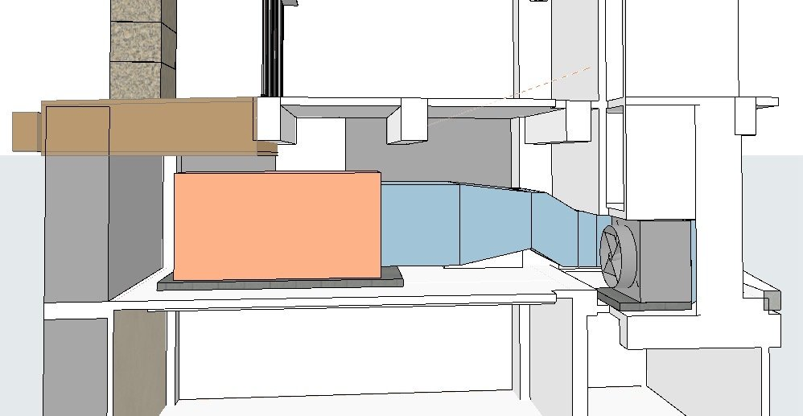

<!DOCTYPE html>
<html lang="zh-TW">
<head>
<meta charset="UTF-8" />
<meta name="viewport" content="width=device-width, initial-scale=1.0" />
<title>張哲銘 網站原型 v1｜圖說＋流程主線</title>
<link rel="preconnect" href="https://fonts.googleapis.com" />
<link rel="preconnect" href="https://fonts.gstatic.com" crossorigin />
<link href="https://fonts.googleapis.com/css2?family=Noto+Sans+TC:wght@400;500;700;900&display=swap" rel="stylesheet" />
<style>
/* 變數：一個底色（桌面）、一張圖紙、一個墨色、一個修訂紅 */
:root {
  --desk: #1d2327;
  --desk-2: #2a3238;
  --on-desk: #e6ebe9;
  --on-desk-2: #9aa9ad;
  --sheet: #eef0ec;
  --sheet-2: #e0e4de;
  --ink: #12181c;
  --ink-2: #566268;
  --red: #c9372a;
  --cad: #212830;
  --line: #12181c;
  --fs-xl: clamp(2.6rem, 6vw, 5rem);
  --fs-l: 1.5rem;
  --fs-m: 1.0625rem;
  --fs-s: 0.875rem;
  --fs-xs: 0.78rem;
}
*, *::before, *::after { box-sizing: border-box; }
html, body { height: 100%; }
body {
  margin: 0;
  background: var(--desk);
  color: var(--ink);
  font-family: "Noto Sans TC", "PingFang TC", "Microsoft JhengHei", sans-serif;
  font-size: var(--fs-m);
  line-height: 1.7;
  font-variant-numeric: tabular-nums;
  -webkit-font-smoothing: antialiased;
}
h1, h2, h3, p, ul, ol, dl, dd, figure, table { margin: 0; }
ul, ol { padding: 0; list-style: none; }
button { font: inherit; color: inherit; background: none; border: 0; padding: 0; cursor: pointer; text-align: left; }
a { color: inherit; }
img, svg { display: block; max-width: 100%; }
:focus-visible { outline: 2px solid var(--red); outline-offset: 2px; }

/* 版面：左邊流程主線，右邊一張圖紙，整個畫面不捲動 */
.desk { display: grid; grid-template-columns: 248px minmax(0, 1fr); height: 100vh; }

/* 流程主線 */
.rail { color: var(--on-desk); padding: 22px 0 16px 22px; display: flex; flex-direction: column; min-height: 0; }
.rail-name { font-weight: 900; font-size: var(--fs-l); letter-spacing: 0.1em; line-height: 1.2; }
.rail-role { color: var(--on-desk-2); font-size: var(--fs-s); margin-top: 4px; }
.rail-scroll { overflow-y: auto; margin-top: 18px; padding-right: 14px; flex: 1; min-height: 0; }
.rail-group { font-size: var(--fs-xs); color: var(--on-desk-2); margin: 14px 0 6px; }
.stages { position: relative; }
.stages::before { content: ""; position: absolute; left: 7px; top: 10px; bottom: 10px; width: 2px; background: var(--desk-2); }
.stage { position: relative; padding: 0 0 12px 28px; }
.stage::before { content: ""; position: absolute; left: 2px; top: 7px; width: 12px; height: 12px; border-radius: 50%; background: var(--desk); border: 2px solid var(--on-desk-2); }
.stage.has-sheets::before { background: var(--on-desk); border-color: var(--on-desk); }
.stage.is-current::before { background: var(--red); border-color: var(--red); }
.stage-name { font-weight: 700; line-height: 1.5; }
.stage-lvl { color: var(--on-desk-2); font-size: var(--fs-xs); }
.codes { display: flex; flex-wrap: wrap; gap: 4px; margin-top: 5px; }
.code {
  font-size: var(--fs-xs); font-weight: 700; line-height: 1; padding: 6px 7px; border-radius: 2px;
  background: var(--desk-2); color: var(--on-desk); white-space: nowrap;
}
.code:hover { background: var(--on-desk); color: var(--desk); }
.code[aria-current="true"] { background: var(--red); color: var(--on-desk); }
.code[disabled] { background: none; color: var(--on-desk-2); cursor: default; padding-inline: 2px; font-weight: 400; }
.rail-keys { color: var(--on-desk-2); font-size: var(--fs-xs); padding-top: 10px; }

/* 圖紙 */
.sheet { margin: 14px 14px 14px 0; background: var(--sheet); padding: 12px; min-height: 0; display: flex; }
.frame { flex: 1; min-width: 0; min-height: 0; border: 2px solid var(--line); display: grid; grid-template-columns: minmax(0, 1fr) 292px; }
.drawing { min-width: 0; min-height: 0; overflow: auto; padding: clamp(18px, 2.4vw, 34px); }
.drawing > * { animation: sheet-in 0.22s cubic-bezier(0.16, 1, 0.3, 1) both; }
@keyframes sheet-in { from { opacity: 0; transform: translateY(8px); } }

/* 圖籤（右側直欄） */
.tb { border-left: 2px solid var(--line); display: flex; flex-direction: column; min-height: 0; }
.tb-top { flex: 1; min-height: 0; overflow-y: auto; }
.cell { border-bottom: 1px solid var(--line); padding: 9px 12px 11px; }
.cell-k { font-size: var(--fs-xs); color: var(--ink-2); line-height: 1.4; }
.cell-v { font-weight: 700; line-height: 1.45; }
.tb-photo img { width: 100%; }
.tb-photo { border-bottom: 1px solid var(--line); }
.notes { font-size: var(--fs-s); line-height: 1.75; }
.notes p + p { margin-top: 0.6em; }
.notes .src { color: var(--ink-2); font-size: var(--fs-xs); }
.tb-fixed > .cell:first-child { border-top: 2px solid var(--line); }
.tb-fixed > .cell:last-child { border-bottom: 0; }
.tb-row { display: grid; grid-template-columns: 1fr 1fr; }
.tb-row .cell + .cell { border-left: 1px solid var(--line); }
.sheet-no { font-size: 2.1rem; font-weight: 900; line-height: 1.1; letter-spacing: 0.02em; }
.pager { display: flex; align-items: center; justify-content: space-between; gap: 8px; }
.pager button { width: 40px; height: 40px; display: grid; place-items: center; background: var(--ink); color: var(--sheet); border-radius: 2px; }
.pager button:hover { background: var(--red); }
.pager button[disabled] { background: var(--sheet-2); color: var(--ink-2); cursor: default; }
.pager svg { width: 18px; height: 18px; fill: none; stroke: currentColor; stroke-width: 2; stroke-linecap: round; stroke-linejoin: round; }

/* 修訂紀錄、圖層：可操作的圖籤欄位 */
.revs button, .layers button {
  display: grid; grid-template-columns: 30px 1fr; align-items: baseline; gap: 6px; width: 100%;
  padding: 7px 8px; margin-top: 4px; background: var(--sheet-2); border-radius: 2px; font-size: var(--fs-s); line-height: 1.5;
}
.revs button b { font-weight: 900; }
.revs button[aria-pressed="true"] { background: var(--red); color: var(--sheet); }
.layers button { grid-template-columns: 18px 1fr; align-items: center; }
.layers .box { width: 14px; height: 14px; border: 2px solid var(--ink); border-radius: 2px; }
.layers button[aria-pressed="true"] .box { background: var(--ink); box-shadow: inset 0 0 0 2px var(--sheet-2); }

/* 圖紙內容共用 */
.dw-title { font-size: var(--fs-l); font-weight: 900; line-height: 1.35; }
.dw-sub { color: var(--ink-2); font-size: var(--fs-s); margin-top: 2px; }
.dw-lead { font-size: var(--fs-m); max-width: 36em; margin-top: 14px; }
.spec { border-collapse: collapse; width: 100%; margin-top: 18px; }
.spec th, .spec td { border: 1px solid var(--line); padding: 9px 12px; text-align: left; vertical-align: top; font-size: var(--fs-s); line-height: 1.65; }
.spec th { width: 7.5em; font-weight: 500; color: var(--ink-2); white-space: nowrap; }
.spec td strong { font-size: var(--fs-m); }
.ext { display: inline-flex; align-items: center; gap: 6px; font-weight: 700; text-decoration: underline; text-underline-offset: 4px; }
.ext svg { width: 16px; height: 16px; fill: none; stroke: currentColor; stroke-width: 2; stroke-linecap: round; stroke-linejoin: round; }

/* 封面 */
.cover { display: grid; grid-template-columns: minmax(0, 1fr); gap: clamp(20px, 3vh, 36px); min-height: 100%; align-content: space-between; }
.cover h1 { font-size: clamp(2.4rem, 7.5vh, 4.4rem); font-weight: 900; letter-spacing: 0.12em; line-height: 1.1; }
.cover .claim { font-size: clamp(1.15rem, 2vw, 1.7rem); font-weight: 700; line-height: 1.5; margin-top: 10px; }
.cover .claim span { display: block; }
.index { border-collapse: collapse; width: 100%; }
.index caption { text-align: left; font-weight: 900; padding-bottom: 6px; }
.index th, .index td { border: 1px solid var(--line); padding: 0; font-size: var(--fs-s); text-align: left; }
.index thead th { padding: 6px 10px; font-weight: 500; color: var(--ink-2); font-size: var(--fs-xs); }
.index td > button, .index td > span { display: block; width: 100%; padding: 5px 10px; line-height: 1.5; }
.index tr.go:hover td { background: var(--ink); color: var(--sheet); }
.index tr.go td:first-child button { font-weight: 900; }
.index tr.off td { color: var(--ink-2); }
.index td:first-child { width: 5.2em; white-space: nowrap; }
.index td:last-child { width: 15em; white-space: nowrap; }

/* 案件圖（都更三案） */
.big-no { font-size: var(--fs-xl); font-weight: 900; line-height: 1; }
.big-no small { font-size: var(--fs-l); margin-left: 6px; }
.track { display: grid; grid-template-columns: repeat(5, 1fr); margin-top: 18px; max-width: 560px; border: 1px solid var(--line); }
.track li { padding: 8px 4px; text-align: center; font-size: var(--fs-s); border-left: 1px solid var(--line); color: var(--ink-2); }
.track li:first-child { border-left: 0; }
.track .done { background: var(--sheet-2); color: var(--ink); }
.track .now { background: var(--red); color: var(--sheet); font-weight: 700; }

/* 電梯圖、PIT 圖 */
.fig { margin-top: 14px; }
.fig svg { width: 100%; height: auto; }
.fig-cap { color: var(--ink-2); font-size: var(--fs-xs); margin-top: 6px; }
.pit { position: relative; background: var(--cad); }
.pit.is-3d { background: #fff; }
.pit img { width: 100%; height: auto; }
.pit svg { position: absolute; inset: 0; width: 100%; height: 100%; }
.pit svg text { font-size: 30px; font-weight: 700; paint-order: stroke; stroke-width: 7px; stroke-linejoin: round; }
.pit.is-3d svg text { fill: var(--ink); stroke: #fff; }
.pit.is-cad svg text { fill: #fff; stroke: var(--cad); }
.pit svg line, .pit svg circle { stroke: var(--red); fill: var(--red); stroke-width: 3; }
.result { margin-top: 14px; font-weight: 700; max-width: 40em; }
.thumbs { display: flex; gap: 12px; margin-top: 18px; }
.thumbs button { width: 190px; font-size: var(--fs-s); font-weight: 700; }
.thumbs img { width: 100%; height: 96px; object-fit: cover; border: 2px solid var(--sheet-2); }
.thumbs button[aria-pressed="true"] img { border-color: var(--red); }
.thumbs span { display: block; margin-top: 4px; }

/* 窄螢幕：主線改成上方橫向，圖紙往下排 */
@media (max-width: 900px) {
  html, body { height: auto; }
  .desk { display: block; height: auto; }
  .rail { padding: 14px 14px 6px; }
  .rail-scroll { overflow: visible; margin-top: 10px; padding-right: 0; }
  .stages { display: flex; gap: 14px; overflow-x: auto; padding-bottom: 8px; }
  .stages::before { display: none; }
  .stage { padding: 0 0 0 20px; flex: none; }
  .stage::before { left: 0; }
  .rail-keys { display: none; }
  .sheet { margin: 0 8px 8px; padding: 8px; }
  .frame { grid-template-columns: 1fr; }
  .drawing { overflow: visible; padding: 16px; }
  .tb { border-left: 0; border-top: 2px solid var(--line); }
  .tb-top { overflow: visible; }
  .tb-photo img { max-height: 220px; object-fit: cover; }
  .index td:last-child { width: auto; white-space: normal; }
  .thumbs button { width: 50%; }
}
@media (prefers-reduced-motion: reduce) {
  .drawing > * { animation: none; }
}
</style>
</head>
<body>
<div class="desk">
  <aside class="rail" aria-label="流程主線">
    <button class="rail-name" type="button" data-go="G-00">張哲銘</button>
    <p class="rail-role">建築專案管理 · PMP®</p>
    <div class="rail-scroll">
      <div class="codes" id="rail-general"></div>
      <p class="rail-group">都更到新建的流程，圖號是我在那個階段做的事</p>
      <ol class="stages" id="rail-stages"></ol>
    </div>
    <p class="rail-keys">鍵盤 ← → 可以翻頁</p>
  </aside>

  <main class="sheet">
    <div class="frame">
      <section class="drawing" id="drawing" aria-live="polite"></section>
      <aside class="tb" aria-label="圖籤">
        <div class="tb-top" id="tb-top"></div>
        <div class="tb-fixed">
          <div class="cell"><p class="cell-k">工程名稱</p><p class="cell-v" id="tb-project"></p></div>
          <div class="cell"><p class="cell-k">圖名</p><p class="cell-v" id="tb-name"></p></div>
          <div class="tb-row">
            <div class="cell"><p class="cell-k">圖號</p><p class="sheet-no" id="tb-no"></p></div>
            <div class="cell"><p class="cell-k">繪圖</p><p class="cell-v">張哲銘</p><p class="cell-k" style="margin-top:6px">比例</p><p class="cell-v" id="tb-scale"></p></div>
          </div>
          <div class="cell pager">
            <button type="button" id="prev" aria-label="上一張"><svg viewBox="0 0 24 24"><path d="M15 5l-7 7 7 7" /></svg></button>
            <p><span class="cell-k">張次</span> <strong id="tb-page"></strong></p>
            <button type="button" id="next" aria-label="下一張"><svg viewBox="0 0 24 24"><path d="M9 5l7 7-7 7" /></svg></button>
          </div>
        </div>
      </aside>
    </div>
  </main>
</div>

<script>
/* ---------------- 資料：階段與圖面 ---------------- */
const STAGES = [
  { n: "開發整合", lvl: "實作＋參與" },
  { n: "事業計畫・權利變換", lvl: "實作＋理解" },
  { n: "開工前準備", lvl: "實作＋理解" },
  { n: "施工發包", lvl: "實作＋理解" },
  { n: "興建", lvl: "實作" },
  { n: "交屋", lvl: "理解" },
  { n: "使用維運", lvl: "理解" },
];
const WEILAO = "台北市精華商業區危老新建工程";
const SHEETS = [
  { id: "G-00", name: "封面與圖面目錄", project: "張哲銘 工作紀錄", stage: null, scale: "—", built: true },
  { id: "U-03", name: "台北市住宅區 75 戶純住宅大樓案", project: "都更案（前期開發）", stage: 0, scale: "—", built: true },
  { id: "T-01", name: "都更案專案總表", project: "從實務整理出的工具", stage: 0, scale: "—", built: false },
  { id: "U-01", name: "新北市商業區 50 戶住商混合大樓案", project: "都更案（都市更新）", stage: 1, scale: "—", built: true },
  { id: "U-02", name: "台北市住宅區 150 戶純住宅大樓案", project: "都更案（都市更新）", stage: 1, scale: "—", built: true },
  { id: "C-01", name: "指定分包詢比價", project: WEILAO, stage: 3, scale: "—", built: true },
  { id: "C-02", name: "電梯交通量檢討", project: WEILAO, stage: 4, scale: "示意", built: true },
  { id: "C-03", name: "電梯 PIT 與發電機進排氣", project: WEILAO, stage: 4, scale: "示意", built: true },
  { id: "T-02", name: "單一帳本（請款、撥款、對帳）", project: "從實務整理出的工具", stage: 4, scale: "—", built: false },
  { id: "T-03", name: "專案管理制度傳承手冊", project: "從實務整理出的工具", stage: null, scale: "—", built: false },
  { id: "G-01", name: "學歷、證照與獎項", project: "張哲銘 工作紀錄", stage: null, scale: "—", built: false },
  { id: "G-02", name: "跨領域經歷", project: "張哲銘 工作紀錄", stage: null, scale: "—", built: false },
  { id: "G-03", name: "學生時期作品", project: "張哲銘 工作紀錄", stage: null, scale: "—", built: false },
];
const BUILT = SHEETS.filter((s) => s.built);
const state = { id: "G-00", rev: "B", pitView: "3d", labels: true, run: true };

/* ---------------- 各張圖的內容 ---------------- */
const CASES = {
  "U-01": { no: "50", meta: [["類型", "都市更新"], ["新建規模", "地上 18 層 / 地下 6 層"], ["構造", "RC 造"]], now: 1,
    desc: "本案原事業計畫已核定，後續辦理實施方式變更及容積獎勵值變更；協助審查意見修正對照檢核與變更圖說界面確認，參與公辦公聽會與報告書審閱，並協助回應地主權益疑義。" },
  "U-02": { no: "150", meta: [["類型", "都市更新"], ["新建規模", "地上 20 層 / 地下 4 層"], ["構造", "RC 造"]], now: 1,
    desc: "協辦地主說明會與都更公聽會，協助整合逾 150 戶原地主的不同需求；配合都更規劃師、估價師與地政士團隊，推進公開審查程序。" },
  "U-03": { no: "75", meta: [["類型", "前期開發"], ["產品定位", "純住宅社區"], ["階段", "前期意願整合與合建評估"]], now: 0,
    desc: "執行地籍圖說清查，編製地主說明會簡報並協同拜訪住戶，協助前期合建契約研擬與地主參與都更意願整合。" },
};

function coverHTML() {
  const rows = SHEETS.map((s) => {
    const st = s.stage === null ? "總說明" : `${s.stage + 1}　${STAGES[s.stage].n}`;
    return s.built && s.id !== "G-00"
      ? `<tr class="go"><td><button type="button" data-go="${s.id}">${s.id}</button></td><td><button type="button" data-go="${s.id}">${s.name}</button></td><td><button type="button" data-go="${s.id}" tabindex="-1">${st}</button></td></tr>`
      : `<tr class="${s.id === "G-00" ? "" : "off"}"><td><span>${s.id}</span></td><td><span>${s.name}</span></td><td><span>${st}</span></td></tr>`;
  }).join("");
  return `<div class="cover">
    <div>
      <h1>張哲銘</h1>
      <p class="claim"><span>建築專案管理。</span><span>我想讓建案的紀錄可以追溯，成本和進度可以預期。</span></p>
    </div>
    <table class="index">
      <caption>圖面目錄</caption>
      <thead><tr><th>圖號</th><th>圖名</th><th>階段</th></tr></thead>
      <tbody>${rows}</tbody>
    </table>
  </div>`;
}

function caseHTML(s) {
  const c = CASES[s.id];
  const names = ["整合", "審查", "核定", "施工", "完工"];
  return `<div>
    <p class="big-no">${c.no}<small>戶　原地主</small></p>
    <h2 class="dw-title" style="margin-top:10px">${s.name}</h2>
    <ol class="track" aria-label="目前階段：${names[c.now]}">${names.map((n, i) => `<li class="${i < c.now ? "done" : i === c.now ? "now" : ""}">${n}</li>`).join("")}</ol>
    <table class="spec"><tbody>${c.meta.map(([k, v]) => `<tr><th>${k}</th><td>${v}</td></tr>`).join("")}<tr><th>我做的事</th><td>${c.desc}</td></tr></tbody></table>
  </div>`;
}

function bidHTML() {
  return `<div>
    <h2 class="dw-title">指定分包詢比價</h2>
    <p class="dw-sub">${WEILAO}</p>
    <table class="spec"><tbody>
      <tr><th>規模</th><td>地上 22 層 / 地下 6 層</td></tr>
      <tr><th>構造</th><td>SRC 造</td></tr>
      <tr><th>總工程</th><td><strong>新台幣 17.4 億元</strong></td></tr>
      <tr><th>指定分包</th><td><strong>約 5.7 億元</strong><br />電梯、鋁窗、機電、監控，以及追加減</td></tr>
      <tr><th>我做的事</th><td>負責詢價與比價分析，作為議價及決標依據；同時參與每週工務會議、圖說會議與施工圖審查，協調營造廠、建築師、結構與機電技師之間的界面，掌握施工進度。</td></tr>
      <tr><th>影片</th><td><a class="ext" href="https://youtu.be/9lLVu45Ll8k" target="_blank" rel="noopener noreferrer">現場工務實錄（01:24）<svg viewBox="0 0 24 24"><path d="M7 17 17 7M9 7h8v8" /></svg></a></td></tr>
    </tbody></table>
  </div>`;
}

/* 電梯圖：樓層與停靠樓層照原本網站的示意圖 */
const EL = { top: 44, fh: 30, x0: 150, x1: 760 };
const fy = (f) => EL.top + (14 - f) * EL.fh + EL.fh / 2; // 樓層中心
const SHAFTS = {
  A: [ { x: 400, label: "A1", stops: [1, 14], dots: range(1, 14) }, { x: 470, label: "A2", stops: [1, 14], dots: range(1, 14) } ],
  B: [ { x: 300, label: "新增", stops: [1, 7], dots: range(1, 7), isNew: true }, { x: 360, label: "新增", stops: [1, 7], dots: range(1, 7), isNew: true },
       { x: 500, label: "A2", stops: [1, 14], dots: range(2, 14) }, { x: 570, label: "A1", stops: [1, 14], dots: range(8, 14) } ],
};
function range(a, b) { return Array.from({ length: b - a + 1 }, (_, i) => a + i); }

function elevatorHTML() {
  const rev = state.rev, shafts = SHAFTS[rev];
  const base = EL.top + 14 * EL.fh;
  let g = "";
  for (let f = 1; f <= 14; f++) {
    const y = EL.top + (14 - f) * EL.fh;
    g += `<line x1="${EL.x0}" y1="${y}" x2="${EL.x1}" y2="${y}" stroke="#12181c" stroke-opacity="${f === 14 ? 0.9 : 0.18}" />`;
    g += `<text x="${EL.x0 - 14}" y="${fy(f) + 5}" text-anchor="end" font-size="13" fill="#566268">${f}F</text>`;
  }
  g += `<line x1="${EL.x0}" y1="${base}" x2="${EL.x1}" y2="${base}" stroke="#12181c" stroke-width="2.5" />`;
  shafts.forEach((s, i) => {
    const yTop = EL.top + (14 - s.stops[1]) * EL.fh, h = (s.stops[1] - s.stops[0] + 1) * EL.fh;
    g += `<rect x="${s.x - 17}" y="${yTop}" width="34" height="${h}" fill="${s.isNew ? "#c9372a" : "#12181c"}" fill-opacity="${s.isNew ? 0.1 : 0.06}" stroke="${s.isNew ? "#c9372a" : "#12181c"}" stroke-width="${s.isNew ? 2 : 1.4}" />`;
    s.dots.forEach((f) => { g += `<circle cx="${s.x}" cy="${fy(f)}" r="3.4" fill="${s.isNew ? "#c9372a" : "#12181c"}" />`; });
    g += `<rect class="car" data-i="${i}" x="${s.x - 12}" y="${fy(1) - 11}" width="24" height="22" rx="2" fill="${s.isNew ? "#c9372a" : "#12181c"}" />`;
    g += `<text x="${s.x}" y="${base + 22}" text-anchor="middle" font-size="14" font-weight="700" fill="${s.isNew ? "#c9372a" : "#12181c"}">${s.label}</text>`;
  });
  if (rev === "B") {
    // 修訂雲與版次三角
    const x0 = 262, x1 = 398, y0 = EL.top + 7 * EL.fh - 16, y1 = base + 30;
    let d = `M${x0} ${y0}`;
    for (let x = x0; x < x1; x += 17) d += ` a8.5 8.5 0 0 1 17 0`;
    for (let y = y0; y < y1; y += 17) d += ` a8.5 8.5 0 0 1 0 17`;
    for (let x = x1; x > x0; x -= 17) d += ` a8.5 8.5 0 0 1 -17 0`;
    for (let y = y1; y > y0; y -= 17) d += ` a8.5 8.5 0 0 1 0 -17`;
    g += `<path d="${d}" fill="none" stroke="#c9372a" stroke-width="2" />`;
    g += `<path d="M232 ${y0 + 6} l16 28 h-32 z" fill="none" stroke="#c9372a" stroke-width="2" /><text x="232" y="${y0 + 29}" text-anchor="middle" font-size="13" font-weight="900" fill="#c9372a">B</text>`;
    // 分區尺寸線
    const bx = 650, mid = EL.top + 7 * EL.fh;
    g += `<path d="M${bx} ${mid} V${base} M${bx - 6} ${mid} h12 M${bx - 6} ${base} h12" stroke="#12181c" stroke-width="1.4" fill="none" /><text x="${bx + 14}" y="${(mid + base) / 2 + 5}" font-size="15" font-weight="700" fill="#12181c">低區 1–7F</text>`;
    g += `<path d="M${bx} ${EL.top} V${mid} M${bx - 6} ${EL.top} h12" stroke="#12181c" stroke-width="1.4" fill="none" /><text x="${bx + 14}" y="${(EL.top + mid) / 2 + 5}" font-size="15" font-weight="700" fill="#12181c">中高樓層</text>`;
  }
  const head = rev === "A"
    ? ["原設計：2 部電梯服務 1–14F", "尖峰輸送量不足，等候過長"]
    : ["折衷定案：加開 2 部專責低區 1–7F", "低區分流，減輕原有電梯負擔"];
  return `<div>
    <h2 class="dw-title">${head[0]}</h2>
    <p class="dw-sub" style="color:${rev === "A" ? "var(--red)" : "var(--ink)"};font-weight:700;font-size:var(--fs-m)">${head[1]}</p>
    <figure class="fig">
      <svg viewBox="100 20 720 ${14 * EL.fh + 96}" role="img" aria-label="${head[0]}">${g}</svg>
      <figcaption class="fig-cap">示意圖，僅繪辦公 1–14F，圓點為停靠樓層。</figcaption>
    </figure>
  </div>`;
}

function pitHTML() {
  const is3d = state.pitView === "3d";
  const tags = is3d
    ? { vb: "0 0 998 517", items: [["樓版與梁", 560, 52, 560, 124, "middle"], ["發電機", 300, 492, 340, 330, "middle"], ["散熱風管", 610, 492, 625, 310, "middle"], ["排風機", 890, 478, 815, 345, "middle"]] }
    : { vb: "0 0 1390 683", items: [["發電機", 330, 620, 470, 430, "middle"], ["散熱風管", 800, 250, 800, 335, "middle"], ["排風機", 870, 560, 1025, 430, "middle"]] };
  const overlay = state.labels
    ? `<svg viewBox="${tags.vb}" aria-hidden="true">${tags.items.map(([t, tx, ty, px, py, a]) => `<line x1="${tx}" y1="${ty < py ? ty + 10 : ty - 30}" x2="${px}" y2="${py}" /><circle cx="${px}" cy="${py}" r="6" /><text x="${tx}" y="${ty}" text-anchor="${a}">${t}</text>`).join("")}</svg>`
    : "";
  return `<div>
    <h2 class="dw-title">${is3d ? "3D 模型：風管從版下通過的路徑" : "剖面：新電梯底坑壓縮發電機的進排氣空間"}</h2>
    <p class="dw-sub">${is3d ? "ArchiCAD 3D 模型，與機電設計、機電廠商、土建對圖" : "發電機室剖面，板與梁的高差複雜，平剖面判斷不出來"}</p>
    <figure class="fig">
      <div class="pit ${is3d ? "is-3d" : "is-cad"}">
        
        ${overlay}
      </div>
    </figure>
    <p class="result">施工前就用 3D 排除機電與結構碰撞，避免了工期延誤。</p>
    <div class="thumbs">
      <button type="button" data-view="cad" aria-pressed="${!is3d}"><span>1　剖面：衝突在哪裡</span></button>
      <button type="button" data-view="3d" aria-pressed="${is3d}"><span>2　3D：怎麼解</span></button>
    </div>
  </div>`;
}

/* ---------------- 圖籤上半：照片、修訂、圖層、圖說 ---------------- */
function tbTopHTML(s) {
  if (s.id === "G-00") return `<div class="tb-photo"></div>
    <div class="cell notes"><p class="cell-k">說明</p>
      <p>2024–2026 年於家騰建設擔任業主端專案，持有 PMP® 國際專案管理師認證。</p>
      <p>於總工程新台幣 17.4 億元的危老新建工程中，負責約 5.7 億元指定分包的詢價與比價分析，並參與每週工務會議、圖說會議與施工圖審查；協同推進雙北 4 案都更與危老重建，累計地主逾 270 戶。</p></div>`;
  if (s.id === "C-02") return `<div class="cell revs"><p class="cell-k">修訂紀錄（點選切換版次）</p>
      <button type="button" data-rev="A" aria-pressed="${state.rev === "A"}"><b>A</b><span>原設計，2 部</span></button>
      <button type="button" data-rev="B" aria-pressed="${state.rev === "B"}"><b>B</b><span>折衷定案，加開 2 部</span></button></div>
    <div class="cell layers"><p class="cell-k">顯示</p>
      <button type="button" data-toggle="run" aria-pressed="${state.run}"><span class="box"></span><span>車廂運轉示意</span></button></div>
    <div class="cell notes"><p class="cell-k">圖說</p>
      <p>原設計辦公只有 2 部電梯服務 1–14F。依學術期刊方法，以「尖峰 5 分鐘輸送量」與「等候間隔」兩項檢核，2 部都不合格。</p>
      <p>再與電梯廠商比較轉乘、分梯、加梯等方案，業主為未來使用者考量，折衷定案加開 2 部專責低區 1–7F，原有電梯改服務中高樓層。</p>
      <p>辦公樓層的尖峰候梯有改善（原有 A2 仍偏慢）。</p>
      <p class="src">參考：凌瑞賢，〈中低層建築最適電梯數分析〉，《建築學報》第 58 期，2006</p></div>`;
  if (s.id === "C-03") return `<div class="cell revs"><p class="cell-k">視圖（點選切換）</p>
      <button type="button" data-view="cad" aria-pressed="${state.pitView === "cad"}"><b>1</b><span>剖面：衝突在哪裡</span></button>
      <button type="button" data-view="3d" aria-pressed="${state.pitView === "3d"}"><b>2</b><span>3D：怎麼解</span></button></div>
    <div class="cell layers"><p class="cell-k">圖層</p>
      <button type="button" data-toggle="labels" aria-pressed="${state.labels}"><span class="box"></span><span>標註</span></button></div>
    <div class="cell notes"><p class="cell-k">圖說</p>
      <p>加開電梯後，新電梯底坑往下挖，壓縮 B1 緊急發電機的進排氣空間；板與梁的高差複雜，平剖面判斷不出來。</p>
      <p>以 ArchiCAD 建 3D 模型，與機電設計、機電廠商、土建對圖，找出版下可行的風管路徑。</p>
      <p>我主責 3D 界面檢討與方案研擬。</p></div>`;
  return "";
}

/* ---------------- 繪製與互動 ---------------- */
const $ = (id) => document.getElementById(id);
const sheetOf = (id) => SHEETS.find((s) => s.id === id);

function codeBtn(s) {
  return `<button class="code" type="button" ${s.built ? `data-go="${s.id}"` : "disabled"} ${s.id === state.id ? 'aria-current="true"' : ""} title="${s.name}">${s.id}</button>`;
}
function renderRail() {
  const cur = sheetOf(state.id);
  $("rail-general").innerHTML = SHEETS.filter((s) => s.stage === null).map(codeBtn).join("");
  $("rail-stages").innerHTML = STAGES.map((st, i) => {
    const list = SHEETS.filter((s) => s.stage === i);
    return `<li class="stage ${list.some((s) => s.built) ? "has-sheets" : ""} ${cur.stage === i ? "is-current" : ""}">
      <p class="stage-name">${i + 1}　${st.n}</p><p class="stage-lvl">${st.lvl}</p>
      ${list.length ? `<div class="codes">${list.map(codeBtn).join("")}</div>` : ""}</li>`;
  }).join("");
}
function render() {
  const s = sheetOf(state.id);
  $("drawing").innerHTML =
    s.id === "G-00" ? coverHTML() : s.id === "C-01" ? bidHTML() : s.id === "C-02" ? elevatorHTML() : s.id === "C-03" ? pitHTML() : caseHTML(s);
  $("drawing").scrollTop = 0;
  $("tb-top").innerHTML = tbTopHTML(s);
  $("tb-project").textContent = s.project;
  $("tb-name").textContent = s.name;
  $("tb-no").textContent = s.id;
  $("tb-scale").textContent = s.scale;
  const i = BUILT.indexOf(s);
  $("tb-page").textContent = `${i + 1} / ${BUILT.length}`;
  $("prev").disabled = i === 0;
  $("next").disabled = i === BUILT.length - 1;
  renderRail();
  document.title = `${s.id} ${s.name}｜張哲銘`;
}
function go(id) {
  const s = sheetOf(id);
  if (!s || !s.built) return;
  state.id = id;
  try { history.replaceState(null, "", "#" + id.toLowerCase()); } catch (e) {}
  render();
}
function step(d) {
  const i = BUILT.indexOf(sheetOf(state.id)) + d;
  if (i >= 0 && i < BUILT.length) go(BUILT[i].id);
}

document.addEventListener("click", (e) => {
  const t = e.target.closest("[data-go],[data-rev],[data-view],[data-toggle]");
  if (!t) return;
  if (t.dataset.go) return go(t.dataset.go);
  if (t.dataset.rev) state.rev = t.dataset.rev;
  if (t.dataset.view) state.pitView = t.dataset.view;
  if (t.dataset.toggle) state[t.dataset.toggle] = !state[t.dataset.toggle];
  render();
});
$("prev").addEventListener("click", () => step(-1));
$("next").addEventListener("click", () => step(1));
document.addEventListener("keydown", (e) => {
  if (e.key === "ArrowRight") step(1);
  if (e.key === "ArrowLeft") step(-1);
});

/* 車廂運轉示意：每台在自己的服務範圍往返，速度相同 */
const reduce = window.matchMedia("(prefers-reduced-motion: reduce)").matches;
function tick(now) {
  if (state.id === "C-02") {
    const shafts = SHAFTS[state.rev];
    document.querySelectorAll(".car").forEach((car) => {
      const s = shafts[+car.dataset.i];
      const span = (s.stops[1] - s.stops[0]) * EL.fh;
      let y = fy(s.stops[0]);
      if (state.run && !reduce) {
        const period = (span * 2) / 0.06; // 每毫秒 0.06 單位
        const p = ((now + s.x * 37) % period) / period;
        y -= span * (p < 0.5 ? p * 2 : 2 - p * 2);
      }
      car.setAttribute("y", y - 11);
    });
  }
  requestAnimationFrame(tick);
}
requestAnimationFrame(tick);

const start = (location.hash || "").slice(1).toUpperCase();
if (sheetOf(start) && sheetOf(start).built) state.id = start;
window.addEventListener("hashchange", () => go((location.hash || "").slice(1).toUpperCase()));
render();
</script>
</body>
</html>
